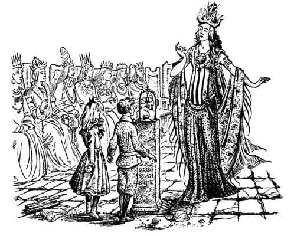
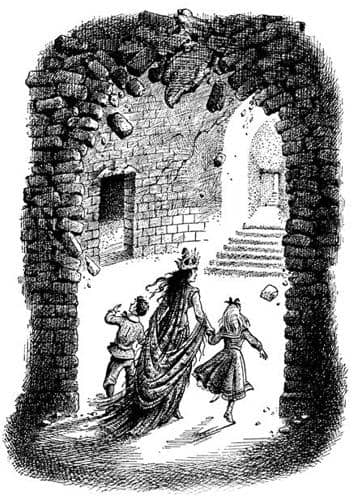
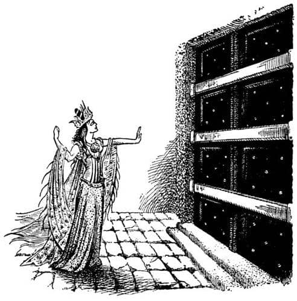

Korkunç Söz
Çocuklar, artık ses çıkarmamasına karşın hâlâ titreşen çanın asılı bulunduğu sütunun önünde birbirlerine bakıyorlardı. Aniden odanın sağlam kalan öbür ucundan yumuşak bir ses işittiler. Ne olduğunu anlamak için şimşek gibi o yana döndüler. Giysili heykellerden birisi, Digory’nin çok güzel olduğunu düşündüğü en uzaktaki kadın, koltuğundan kalkıyordu. Ayağa kalktığı an, düşündüklerinden daha da uzun boylu olduğunu gördüler. Sadece tacından ve giysilerinden değil, dudaklarının kavisinden ve gözlerindeki parıltıdan muhteşem bir kraliçe olduğunu hemen anlayabiliyordunuz. Kraliçe odaya göz gezdirdi, yıkıntıları ve çocukları gördü, fakat yüzünden ikisi hakkında ne düşündüğünü, daha doğrusu şaşırıp şaşırmadığını anlamak mümkün değildi. Hızlı ve geniş adımlarla ilerledi.

“Kim uyandırdı beni? Büyüyü kim bozdu?” diye sordu.
“Sanırım ben” dedi Digory.
“Sen!” dedi Kraliçe, beyaz ve zarif elini Digory’nin omzuna koyarak. Digory bu elin bir kıskaç kadar güçlü olduğunu hissedebiliyordu. “Sen ha! Fakat sen sadece bir çocuksun; sıradan bir çocuk. Herkes bir bakışta senin damarlarında bir damla bile soylu ya da hanedan kanı bulunmadığını görebilir. Senin gibi biri bu eve girmeye nasıl cesaret edebilir?”
“Biz başka bir dünyadan geldik, büyüyle” dedi Polly. Kraliçe’nin, Digory gibi kendisini de fark etmesinin zamanı geldiğini düşünüyordu.
“Bu doğru mu?” dedi Kraliçe Digory’ye, Polly’nin yüzüne bile bakmayarak.
“Evet doğru” dedi Digory.
Kraliçe, Digory’nin yüzünü daha iyi görebilmek için, diğer eliyle onun çenesini yukarıya doğru kaldırdı. Digory onun yüzüne bakmayı denedi ama bakışlarını aceleyle yere doğru çevirdi. Kraliçe’nin gözlerinde onu çok etkileyen bir şey vardı. Bir dakikadan fazla Digory’nin yüzünü inceledikten sonra elini çenesinden çekti ve:
“Sen büyücü değilsin. Büyücülüğün işareti yok yüzünde. Sen sadece büyücünün hizmetçisi olmalısın. Başkasının büyüsüyle buralara gelmişsin.”
“Andrew Dayım” dedi Digory.
O anda, odanın içinden değil ama çok yakın bir yerden, önce bir gürültü, sonra gıcırtı ve sonra da düşen taşların gümbürtüsü duyuldu, tüm zemin sarsıldı.
“Büyük bir tehlike altındayız burada” dedi Kraliçe. “Bütün saray yıkılıyor. Eğer dışarıya çıkmazsak, birkaç dakika sonra hepimiz yıkıntıların altında kalacağız.” Sanki saatin kaç olduğunu söylermiş gibi sakince konuşmuştu. “Gelin” dedi iki elini de çocuklara uzatarak. Kraliçe’den hoşlanmayan ve aksiliği üzerinde olan Polly becerebilseydi elini tutmasına izin vermeyecekti. Ancak Kraliçe o kadar sakin konuşmasına karşın, hareketleri düşüncesi kadar hızlıydı. Polly ne olduğunu anlamadan, sol eli kendisininkinden çok daha büyük ve güçlü bir el tarafından kavranmıştı ve yapabileceği hiçbir şey yoktu.
“Bu çok korkunç bir kadın” diye düşündü Polly. “Küçük bir hareketle kolumu kıracak kadar güçlü. Ve şimdi sol elimi tuttuğu için, sarı yüzüğe erişmem de imkansız. Eğer sağ elimle sol cebime ulaşmaya çalışsam, mutlaka fark eder ve yüzüğe erişmeyi beceremeyebilirim. Ne olursa olsun ona yüzüklerden söz etmemeliyiz. Umarım Digory çenesini tutacak kadar düşüncelidir. Keşke onunla yalnızken biraz konuşabilseydim.”
Kraliçe onları heykellerin bulunduğu salondan uzun bir koridora çıkardı, sonra da labirenti andıran birçok avludan, merdivenlerden ve koridorlardan geçtiler. Büyük sarayın, bazen oldukça yakınlarında, parça parça göçtüğünü ardı ardına duyuyorlardı. Bir defasında, büyük bir kemer onlar geçtikten hemen sonra büyük bir gürültüyle çöktü. Kraliçe hızlı yürüyordu – çocuklar adımlarını uydurabilmek için koşuyorlardı – ama hiç de korkmuş görünmüyordu. Digory, “Müthiş cesur. Ve güçlü. Ben işte buna kraliçe derim. Umarım bize buranın hikâyesini anlatır.” diye düşünüyordu.

Kraliçe yürürken onlara bazı şeyler anlatıyordu.
“Bu, zindanların kapısı” diyordu, ya da “Şu geçit işkence salonuna açılır” ya da “Şurası, büyükdedemin yedi yüz soyluyu ziyafete davet edip, kadehlerindekini bile bitirmeden öldürttüğü eski ziyafet salonuydu. İsyankâr düşüncelere sahiptiler.”
Sonunda şimdiye kadar gördüklerinden daha büyük, muazzam bir salona geldiler. Digory, genişliğinden ve öbür uçtaki kapının büyüklüğünden, nihayet ana girişe gelmekte olduklarını düşündü. Kapı simsiyahtı; ya abanoz ya da bizim dünyamızda bulunmayan bir metalden yapılmıştı. Kaldırılamayacak kadar ağır ve çoğunluğu erişilemeyecek kadar yüksekte olan kol demirleriyle sürmelenmişti. Digory, dışarıya nasıl çıkacaklarını merak ediyordu.
Kraliçe onun elini bıraktı ve dimdik durup kolunu yukarı kaldırdı. Sonra anlayamadıkları (kulağa korkunç gelen) şeyler söyledi ve kapıya bir şey fırlatıyormuş gibi bir hareket yaptı. O kocaman, ağır kapı, sanki ipekten yapılmışçasına bir saniye titreşti ve eşikte sadece bir toz yığınından başka bir şey kalmayacak şekilde ufalandı.

“Vay be!” dedi Digory.
“Senin büyücü üstadın, dayın, benim kadar güçlü mü?” diye sordu Kraliçe, Digory’nin elini yine sıkıca tutarak. “Ama bunu sonra da öğrenirim. Bu arada ne gördüğünüzü unutmayın. Benim yoluma çıkan şeylerin ve insanların sonu budur.”
Kapının bıraktığı boşluktan, şimdiye kadar bu ülkede gördüklerinden çok daha fazla ışık girmekteydi ve Kraliçe onları dışarıya çıkardığında kendilerini açık havada bulmalarına şaşırmadılar. Yüzlerine çarpan rüzgâr soğuktu, ancak biraz küf kokuyordu. Yüksek bir terastan aşağıya bakıyorlardı ve aşağıdaki manzara muhteşemdi.
Ufuk çizgisine yakın bir yerde, bizimkinden çok büyük, kocaman bir güneş vardı. Digory o an, bunun aynı zamanda bizimkinden yaşlı olduğunu da hissetmişti; yaşamının sonundaki bir güneş, o dünyaya yukarıdan bakmaktan bıkmış bir güneş. Güneşin solunda ve yukarısında, iri ve parlak bir tek yıldız vardı. Karanlık gökyüzünde görülebilen iki şey sadece bunlardı ve sönük bir grup oluşturuyorlardı. Ve aşağıda, göz alabildiğine uzanan, içinde hayat belirtisinin görülmediği çok büyük bir şehir vardı. Tüm tapınaklar, kuleler, saraylar, piramitler ve köprüler bu soluk güneşin ışığıyla uzun ve korkunç görünen gölgeler oluşturuyordu. Bir zamanlar şehrin içinden geçen nehir kurumuş ve geriye sadece geniş ve tozlu bir hendek kalmıştı.
“Hiç kimsenin bir daha göremeyeceği şu manzaraya iyi bakın” dedi Kraliçe. “Böyleydi işte Charn; bu muhteşem şehir, Krallar Kralı’nın şehri, dünyanın, belki de bütün dünyaların harikası. Senin dayının buyruğunda bunun gibi bir şehir var mı oğlum?”
“Hayır” dedi Digory. Andrew Dayı’nın buyruğunda hiçbir şehrin olmadığını açıklayacaktı ama Kraliçe devam etti:
“Şimdi sessiz. Fakat her taraf Charn’ın gürültüsüyle doluyken; ayak sesleri, tekerleklerin gıcırtısı, kırbaçların şakırtısı, kölelerin inlemeleri, savaş arabalarının gümbürtüsü ve tapınaklarda çalınan kurban davullarının sesleri ortalığı doldururken, ben yine buradaydım. Her sokaktan savaş naraları yükseldiğinde (kaçınılmaz son yaklaştığında) ve Charn Nehri kıpkırmızı aktığında ben yine buradaydım.” Biraz durakladı ve devam etti, “Bir kadın bir anda her şeyi yok etti.”
“Kim?” dedi Digory zayıf bir sesle, fakat cevabı şimdiden tahmin edebiliyordu.
“Ben” dedi Kraliçe. “Ben, Jadis, son Kraliçe; Dünya’nın Kraliçesi.”
Çocukların ikisi de soğuk rüzgârda titreyerek sessizce ayakta duruyorlardı.
“Kız kardeşimin hatasıydı” dedi Kraliçe. “Beni o zorladı. Tüm güçlerin laneti sonsuza kadar üzerinde olsun! Her an barışmaya hazırdım – evet. Tahtı bana devretseydi yaşamını da bağışlayacaktım. Fakat vermedi. Gururu tüm dünyayı mahvetti. Savaşta bile her iki tarafın da büyü yapmayacağına dair kutsal bir yemin vardı. Fakat o sözünü tutmayınca ben ne yapabilirdim ki? Aptal! Sanki benim onunkinden daha fazla büyü gücüm olduğunu bilmiyormuş gibi! Benim, Korkunç Söz’ün sırrını öğrendiğimi bile biliyordu. Onu – gerçi her zaman zayıf biriydi – kullanmayacağımı mı sandı?
“O da neymiş?” dedi Digory.
“O, sırların sırrıydı” dedi Kraliçe Jadis. “Belli bir ritüelle söylendiğinde, söyleyen dışında tüm canlıları yok eden bu kelimenin varlığı, uzun süreden beri soyumuzun yüce kralları tarafından biliniyordu. Ancak eski krallar güçsüzdü, yufka yürekliydi, yetkilerini kullanmıyorlardı. Onlardan sonra büyük vaatlerle gelenler ise, bu kelimenin ne olduğunu bile merak etmediler. Fakat ben onu gizli bir yerde öğrendim ve öğrenmek için de korkunç bir bedel ödedim. Kız kardeşim beni zorlayana kadar büyüyü kullanmadım. Onu yenebilmek için başka yöntemler kullanarak savaştım. Ordularımın kanını su gibi akıttım—”
“Canavar” diye mırıldandı Polly.
“Son büyük savaş” dedi Kraliçe, “burada, Charn’da üç gün sürdü. Üç gün boyunca şu durduğum yerden aşağıyı seyrettim. Son askerim yere düşene kadar ve isyancıların başındaki lanetli kadın, kız kardeşim, şehirden bu terasa uzanan şu muhteşem merdivenlerin yarısına gelene kadar gücümü kullanmadım. Yüz yüze geleceğimiz ana kadar yaklaşmasını özellikle bekledim. O korkunç, şeytani gözlerini bana çevirdi ve ‘Zafer’ dedi. ‘Evet, zafer’ dedim, ‘ama senin değil.’ Sonra Korkunç Söz’ü söyledim. Az sonra, güneşin altında yaşayan tek canlı bendim.”
“Ya insanlar?” diye soludu Digory.
“Ne insanları oğlum?” diye sordu Kraliçe.
“Bütün sıradan insanlar” dedi Polly, “sana hiç zararı dokunmayan insanlar. Kadınlar, çocuklar ve hayvanlar.”
“Anlamıyor musunuz?” dedi Kraliçe Digory’ye bakmayı sürdürerek: “Ben Kraliçe’ydim. Onlar benim halkımdı. Benim isteklerimi karşılamaktan başka ne işleri vardı ki?”
“Her zaman olduğu gibi, bu da bir talihsizlik onlar için” dedi Digory.
“Senin sıradan bir çocuk olduğunu unutmuştum. Devlet işlerinden ne anlarsın sen? Sen ya da sıradan insanlar için yanlış olan şeylerin benim gibi büyük bir Kraliçe için yanlış olmadığını öğrenmelisin çocuk. Dünyanın ağırlığı bizim omuzlarımızda. Biz tüm kurallardan bağımsız olmalıyız. Bizimkisi ulu ve yalnızlıkla dolu bir kader.”
Digory aniden Andrew Dayı’nın da aynı sözleri söylediğini hatırladı. Fakat Kraliçe Jadis söylediğinde bu sözler, belki de Andrew Dayı iki metre boyunda ve göz kamaştırıcı güzellikte olmadığından, daha da görkemli görünüyordu.
“Sonra ne yaptın?” dedi Digory.
“Ben önceden, atalarımın oturduğu salona güçlü bir büyü yapmıştım. Ve o büyünün gücü, heykeller gibi, yemeğe de ateşe de ihtiyaç olmadan, bin sene geçse bile, birisi gelip çanı çalarak beni uyandırana kadar uyumamı sağlayacaktı.”
“Güneşi de böyle yapan o Korkunç Söz müydü?” diye sordu Digory.
“Ne gibi?” dedi Jadis.
“Böylesine büyük, kırmızı ve soğuk.”
“O her zaman öyleydi” dedi Jadis. “En azından yüz binlerce yıldır. Sizin dünyanızdaki güneş farklı mı?”
“Evet, daha küçük ve sarı. Ve bundan daha çok sıcaklık veriyor.”
Kraliçe uzun uzun gerindi. Digory onun yüzünde, son zamanlarda Andrew Dayı’nın yüzünde de gördüğü aynı açgözlü ifadeyi gördü. “Demek ki” dedi Kraliçe, “sizinki daha genç bir dünya.”
Bomboş şehre bir kez daha bakmak için bir an durakladı – eğer şehre yaptığı kötülüklerden pişmansa bile bunu hiç belli etmiyordu – ve dedi ki:
“Gidelim artık. Tüm çağların sonunun geldiği şu anda hava soğuk burada.”
“Nereye gideceğiz?” diye sordu ikisi birden.
“Nereye?” diye tekrarladı Jadis şaşırarak. “Sizin dünyanıza tabii ki.”
Polly ve Digory şaşkınlıkla birbirlerine baktılar. Polly ilk gördüğü an Kraliçe’den hoşlanmamıştı ve Digory de, hikâyesini dinledikten sonra onunla yeterince zaman harcadığını düşünüyordu. Kraliçe, kimsenin eve götüreceği cinsten bir kişi değildi. Kaldı ki isteseler bile bunu nasıl yapacaklarını bilmiyorlardı. Yapmak istedikleri tek şey, oradan uzaklaşmaktı. Fakat Polly yüzüğüne erişemiyordu ve Digory de kuşkusuz onsuz gidemiyordu. Digory’nin yüzü kıpkırmızı oldu ve kekeleyerek dedi ki:
“Bi – bi – bizim dünyamız. Oraya gitmek istediğini bil – bilmiyordum.”
“Beni götürmek için değilse, neden buraya gönderildiniz ki?” diye sordu Jadis.
“Bizim dünyamızı hiç sevmeyeceğine eminim” dedi Digory. “Onun hoşlanacağı bir yer değil, değil mi Polly? Çok sıkıcı, görülmeye değmez, gerçekten.”
“Benim yönetimimde kısa bir sürede görülmeye değer bir yer olacak.” diye yanıtladı Kraliçe.
“Oh, ama olamaz. Öyle olmaz. Anlayacağın, sana izin vermezler.”
Kraliçe kibirle gülümsedi. “Birçok azametli kral” dedi, “Charn Hanedanı’na karşı dayanabileceğini sandı. Fakat hepsi yenik düştü ve isimleri bile unutuldu. Aptal çocuk! Bir yıl bile geçmeden, benim güzelliğim ve büyülerim sayesinde tüm dünyanızın ayaklarımın altında olmayacağını mı sanıyorsun? Büyülerinizi hazırlayın ve beni derhal oraya götürün.”
“Bu çok korkutucu” dedi Digory Polly’ye.
“Belki de sen dayın için korkuyorsun” dedi Jadis. “Beni gerektiği gibi onurlandırırsa tahtını ve yaşamını kurtarabilir. Ben onunla kavga etmeye gitmiyorum. O sizi buraya nasıl göndereceğini bulduysa çok büyük bir büyücü olmalı. Dünyanızın tümünün mü yoksa bir kısmının mı kralı?”
“Hiçbir yerin kralı değil” dedi Digory.
“Yalan söylüyorsun” dedi Kraliçe. “Büyücülük daima soyluların kanında değil midir? Sıradan insanların büyücü olduğunu kim duymuş ki? Sen gerçeği söylesen de söylemesen de ben bilirim. Senin dayın sizin dünyanızın büyük kralı ve büyücüsü. Sanatı sayesinde sihirli bir aynada ya da sihirli bir havuzda yüzümün görüntüsünü gördü ve güzelliğimin aşkıyla, tüm dünyanızın temellerini sarsan güçlü bir büyü yaptı, beni ona götürmeniz ve benim yardımımı istemek için sizi bu dünyalar arasındaki geniş boşluk üzerinden buraya yolladı. Cevap ver bana: Böyle değil miydi?”
“Şey, tam olarak değil” dedi Digory.
“Ne tam olarak değili” diye bağırdı Polly. “Başından sonuna kadar hepsi saçma.”
“Alçaklar!” diye bağıran Kraliçe, hiddetle Polly’ye döndü ve saçlarını en çok canını yakacak yer olan tam tepesinden kavradı. Fakat bu yüzden iki çocuğun da ellerini bırakmıştı. “Şimdi” diye bağırdı Digory. Polly de “Çabuk” diye bağırdı. Sol ellerini ceplerine daldırdılar. Yüzükleri takmaları bile gerekmedi. Onlara dokundukları an, bu kasvetli dünya bütünüyle gözlerinin önünden kaybolmuştu. Hızla yukarıya doğru çıkıyorlardı. Tepelerindeki sıcak ve yeşil ışık gittikçe artıyordu.